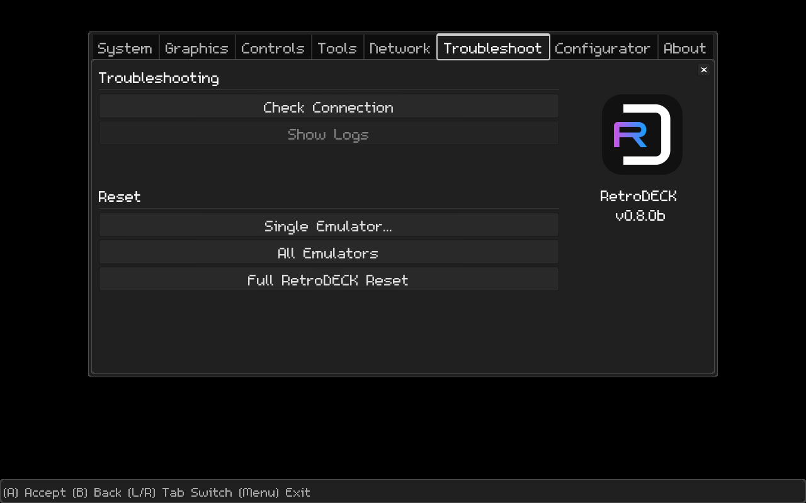
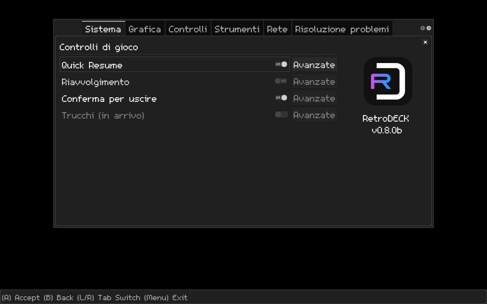

January 2024: A New Year of RetroDECK!¶
A new year and a new blog post!
Highlights:
- External Controller - Radial Menus
- Vita3K & BoilR cooperation
- Progress report
- Many new users
- SteamDeckGyroDSU
- And more!
Many new users - Thanks!¶
We are in our small team very are humble and happy for the recent uptick of RetroDECK users.
Come join the Discord and say Hi!
Or just read up on the Wiki (we are updating it almost every day with new information).
💕 We are glad to have you! 💕
Some new helpers as well¶
We are also thankful for the new people that have shown up to help with various aspects of RetroDECK under the 💙-i-want-to-help channel.
Cooperation between projects: Vita3K¶
Parts of the RetroDECK team have been talking to the Vita3K team about hotkey improvements, flatpaks and other things.
We are hopeful that these discussions lead to improvements for both projects.
Cooperation between projects: BoilR¶
Another person we have been in contact with recently is the developer of BoilR as we working on integrating it into RetroDECK for the "Add RetroDECK games as separate entries in Steam".
A new release of BoilR will be made with our recommended additions that will also benefit those that just use the BoilR application.
NEW: SteamDeckGyroDSU built-in¶
We are experimenting with building in SteamDeckGyroDSU into RetroDECK so you don't have to do the entire setup for emulators like Yuzu to enable Gyro:
How to enable Gyro working Gyro in Yuzu
If we can get it to work, it will be configured in the Emulators for the Steam Deck as soon as you use them.
But let's see how it goes 🙂
Games as separate entries in Steam¶
This function already works in our Beta testing.
There are some minor fixes left in BoilR and RetroDECK, but it works as intended thanks to the above cooperation.
This first version of the function is simple but also quite elegant.
How will it work?¶
We hope to develop this function more in the future, but this will be the first iteration of it.
In the Configurator:
Configure SteamGridDB account (one time):
- Put in your
SteamGridDB API Keyfrom your account. - Checkbox if you want to use NSFW and/or Animated Art.
Do the thing:
- You press the
Sync Favoritesbutton (name pending).
All games you have marked as Favorites ⭐ in ES-DE interface are then:
- Synced
- Scraped
- Added to Steam as separate games
If you add or remove Favorites ⭐ you just press the Sync Favorites button again.
Apply the controller profile:
As the RetroDECK Controller Profile is a global profile you will need to re-apply it for each game entry (as they are counted as a new game in Steam).
Emulator: MAME¶
We have managed to build MAME, we still have several tests to be done and configurations to do.
This will enable a plethora of new systems and we want again to thank those on the MAME team that gave help and advice during the process.
Emulator: Ryujinx¶
We are still evaluating builds, but it looks promising.
Engines: OpenBOR, IkemanGO (M.U.G.E.N), Solarus¶
Works without any major issues.
Status Update: External Controllers¶
You can follow the work here and download the latest versions of the beta profiles there to test even now:
A Radial for the Controllers¶
A new radial menu has been added for all external controllers while holding Select, moving the Left Joystick and pressing L3 to activate the highlighted radial button.
The controllers will not at this moment feature the entire system Radial Menu System as the Steam Deck have, as it is currently too hard to maintain between the devices.
It is more of a good-to-have menu, most of the essential functions are already mapped to Select + the buttons.
The goal of the radial menu on controllers is to put commands you are not using that often there.
But when you want to use them, you do not have to go all the way to your Steam Deck / PC to input them even if it could be a bit of a "claw-grip" to pressSelect and moving the Left Joystick the same time.
The following wiki pages are always updated with the latest efforts of the above issue:
Status Update: Godot Configurator¶

The Godot Configurator is still a work progresses.
It has gotten many major overhauls and improvements already since last time it was shown.
Translations¶

We are also working on translation files, and we hope to have some language options:
- English (got it right now)
But we are also experimenting with:
- Italian
Later we will have the option for the community to send their translations via pull requests and create a little translation group on the Discord.
The font problem¶
One roadblock is the font.
The current font we are using does not support all characters needed for many other languages.
It is ridiculously hard to find a better retro inspired open font.
Another dream goal would be if we can accommodate people with dyslexia like opendyslexic but retro inspired.
If you have any experience with font development or godot development and want to help, please join the Discord and post the 💙-i-want-to-help channel
Easter Egg: Boot Logos - Looking for Artist¶
We have several Easter Egg - Boot Logos for various holidays that are looking for artists over here:
Lunar New Year - 春节 is coming up 🏮
That is all for January¶
That was all for this month!
Thanks everyone!
//The RetroDECK Team